Hi!
Here is some filler text for the time being so that I can suss out what the padding and text placement looks like :) Here is some filler text for the time being so that I can suss out what the padding and text placement looks like :)
Here is some filler text for the time being so that I can suss out what the padding and text placement looks like :) Here is some filler text for the time being so that I can suss out what the padding and text placement looks like :) Here is some filler text for the time being so that I can suss out what the padding and text placement looks like :)
Naomi Etheridge
Naomi Etheridge
In her free time she likes to dance, read and spend time with her friends.
Naomi specialises in more print based mediums, for example: branding, publication and advertising, however she is also competent in a few multimedia disciplines: video editing (Final Cut Pro and Premiere Pro), and coding (HTML and CSS). When she designs, she prefers to use photography and typography to convey the message.
She is very excited to start working in the design industry and has been working hard to pick up odd jobs to help strengthen her folio.
Want to get in contact? Email naomi.eth017@gmail.com with any queries.
NOTE: This whole website was coded by Naomi using HTML, CSS and JS
My updates
Sunday, 17 November 2019
Today marks the official start of my website! See here for any site changes, work updates and maybe even some cheeky plugs for my instagram.
Thanks!
2018
In 2018 I was elected to be one of two Publicity Officers for Monash Dancesport. This meant that I was in charge of Design and Marketing for the club. I started by creating a new logo for the club, as the new one was quite outdated, and throughout the year created a number of graphics to support and advertise upcoming events. A few that I am particularly proud of are the posters for our Performance Night and Annual Ball, and the promo video that I also made for the ball.
 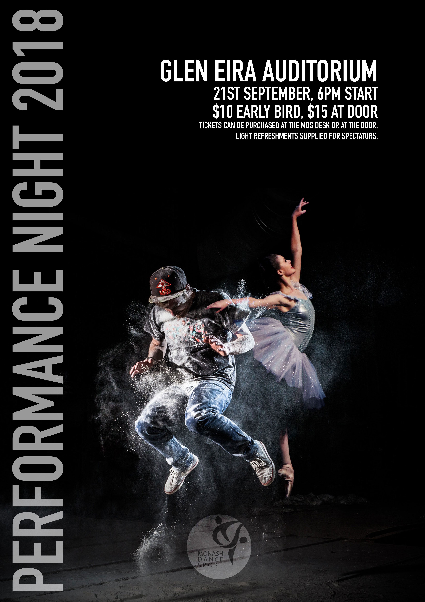
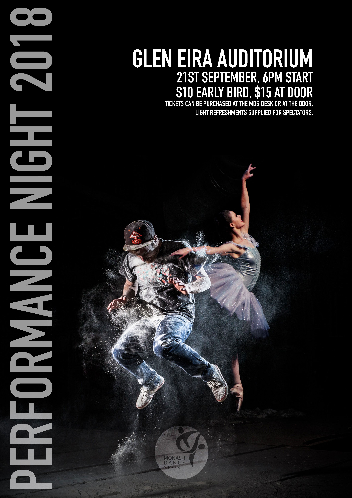
January — April 2019
In early 2019 I was approached by a young, freelance cartographer to create a logo for his freelancing business, Bespoke Maps & Data. He requested something simple and classic that also spoke about the kind of work he does. The triangle represents markers commonly used by cartographers to help with distance accuracy when creating maps.

Semester 2, 2018
This identity was created for the Stratford on the River Festival. It encompassed a logotype, posters, programmes and various merchandise items (that vary in colour-ways) and flags for signage.
 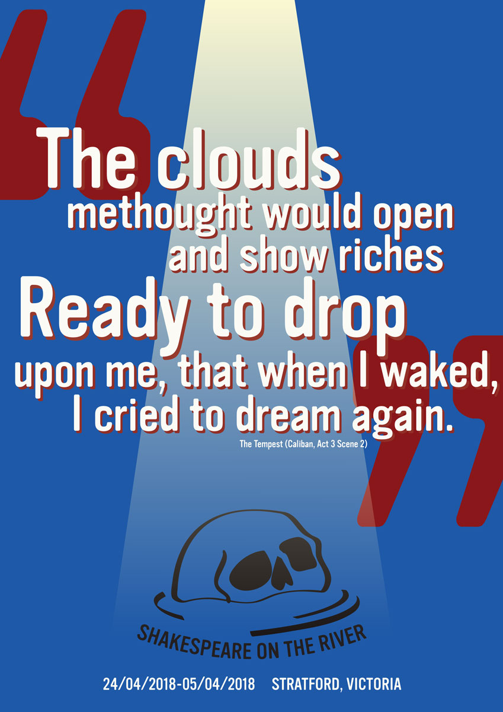
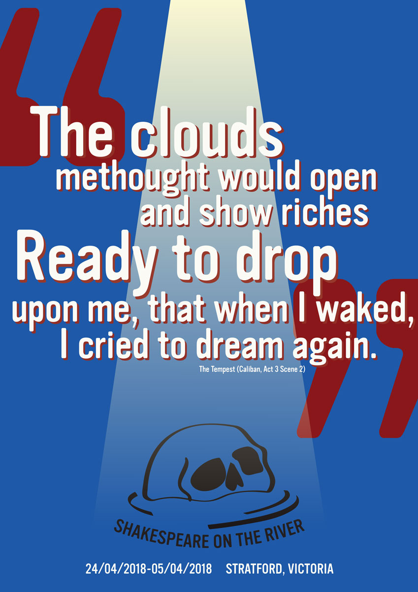

The Shakespeare on the River festival has two themes every year that relate to their writing and art competitions. For 2018, they were 'For the love of Shakespeare' and 'The Tempest'. The majority of the merchandising is surrounding these themes with the intention of change year to year (i.e. the anchor — relating to 'The Tempest' — and the heart — relating to 'For the love of Shakespeare' — would be swapped out for other imagery relavent to the year's themes).
 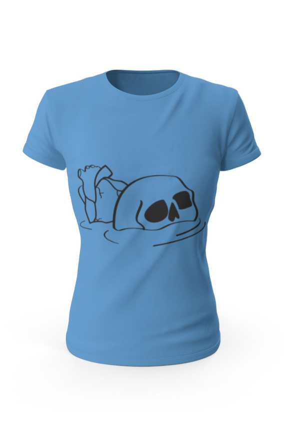
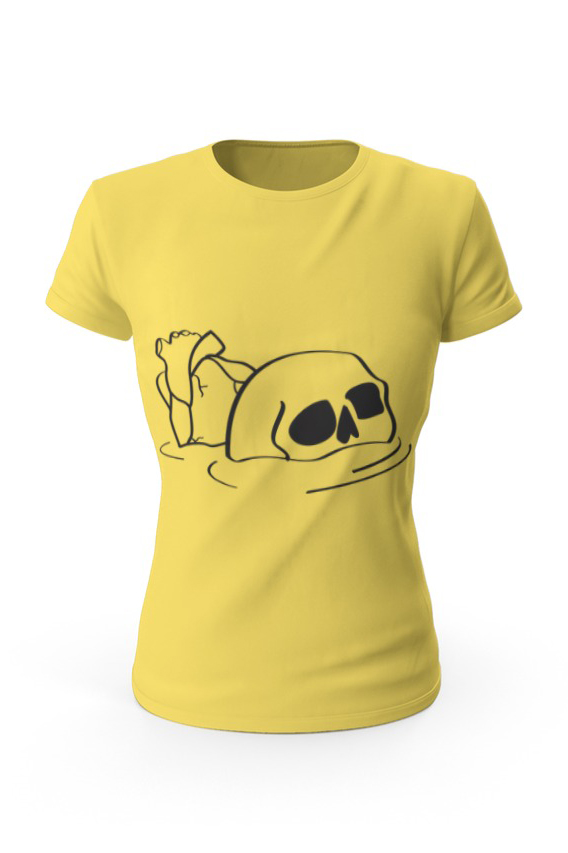
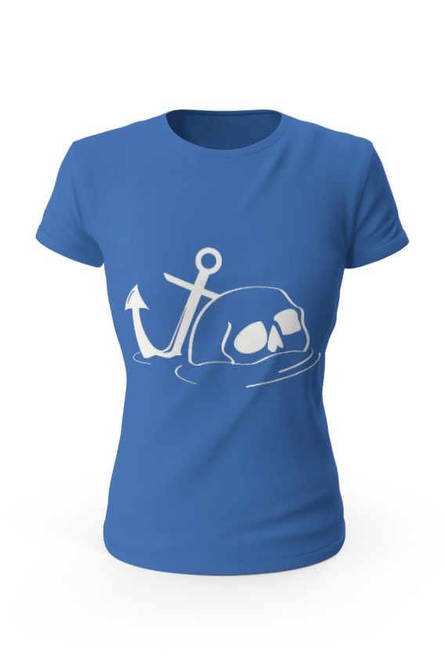
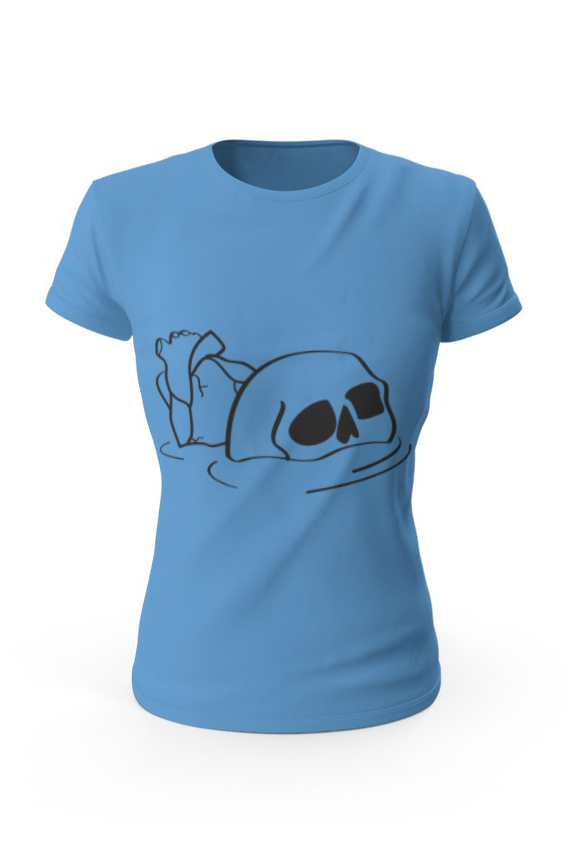
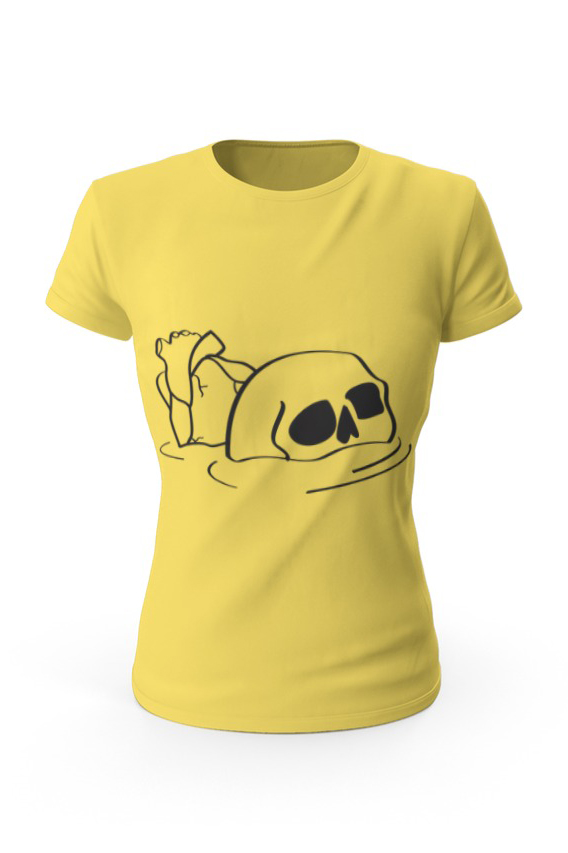
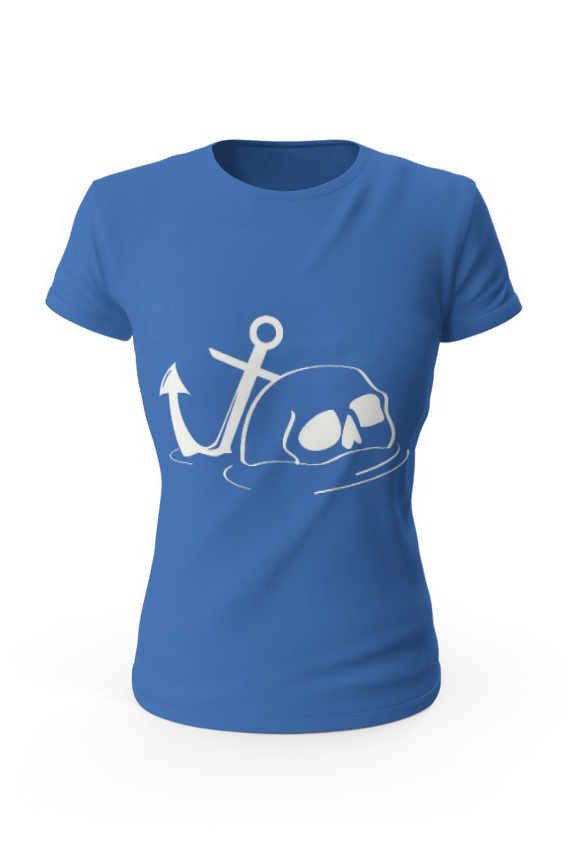


Outside each event there will be a flag detailing what event is currently running. The colours of the flag coordinate with what kind of event it is – for example; light blue for food events, dark blue for plays, and red flags for miscellaneous events.


Semester 2, 2019
For my final studio at university I created an identity for the 1970's Australian play A Stretch of the Imagination, written by Jack Hibberd.
I modelled the overall aesthetic on two strong components of Australian theatre that I felt that Stretch uses a lot: Aussie vernacular and the use of mundane environments to express deep concepts.

Semester 1, 2019
This is a shortened annual report based off of the State Library of Victoria’s annual report for 2018. The company name has been changed and slightly altered to allow me to create a new identity to shape the report around.


Semester 1, 2019
Where did all the Puritans go? is a response to a brief in my 3rd year When studio, that asked us to deep dive through Wikipedia hyperlinks until we settled on a page. We were then asked to document the contents of that page (and any other relevant webpages) as a design outcome. I decided to create a mockumentary – themed like an episode of "You can't ask that" – based around Puritanism: a Christian denomination that died out in the 1600's.

Semester 1, 2019
This brief asked us to take a public webpage and publish it physically without it being a book. So I took Jaden Smith’s twitter feed (known for his “woke” and strange quotes) and turned them into stickers that I placed in areas where graffiti and other “woke” quotes may be seen.
A big part of this project was shock factor, and to get people asking about it. Since these stickers have been placed in bathrooms around Monash University Clayton and on people’s possessions. I have heard a lot of feedback that people have commented and been bemused by them.
 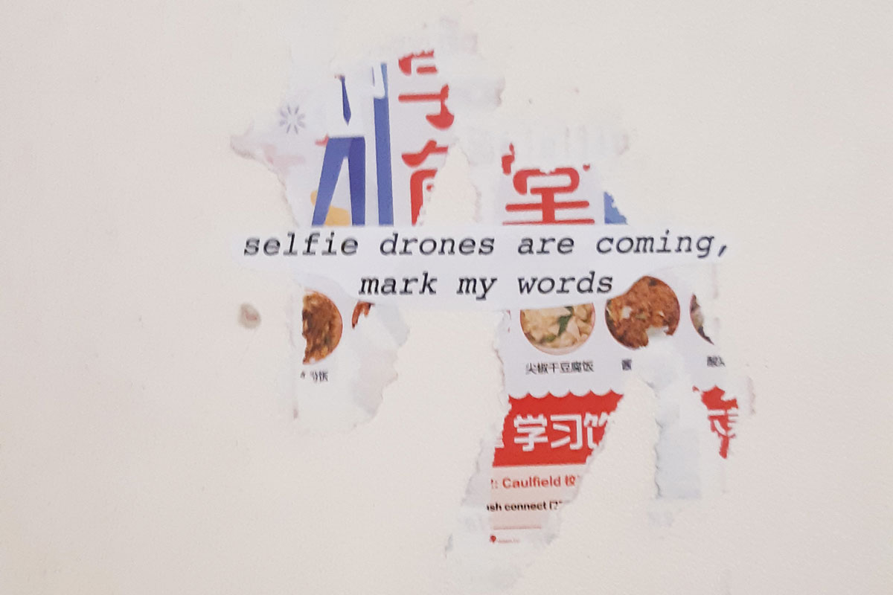
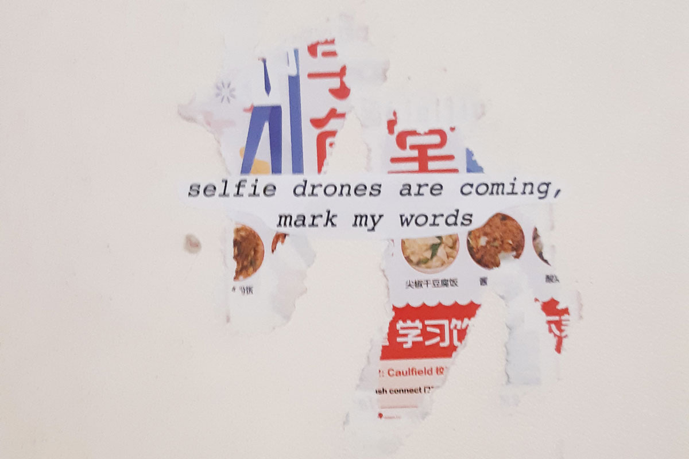